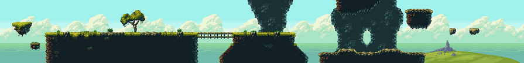

Myndir
Að setja mynd inn á síðuna
Það er lítið mál að setja mynd inn á síðuna sína. Þetta lærðirðu að gera í codecademy, manstu þegar þú gerðir heimasíðuna um birni?
Með þassum kóða:
<img src="img/G5-magic-cliffs.jpg" alt="Magic Cliffs - ansimuz">
Set ég inn á síðuna þessa mynd:
 Opengameart.org AnismuzTil þess að þetta virki er myndin sjálf vistuð í möppunni /img sem er á sama stað og þessi vefsíða.
Að nota myndir í skriftum
Við getum líka notað myndir í p5.js skriftunum okkar. Hér sérðu letidýr sem fylgir músarbendlinum.
Forritið hefur þennan kóða:
var mynd;
function preload() {
mynd = loadImage('assets/sloth.png'); // https://opengameart.org/content/animal-pack-redux
}
function setup() {
createCanvas(600,300);
}
function draw(){
background(255,200,0);
image(mynd,mouseX,mouseY);
}
var mynd; Við búum fyrir til breytu sem mun geyma myndina.
function preLoad() Það sem er inni í preLoad() dallinu er eins og setup() aðeins keyrt einu sinni. En preLoad() er keyrt á undan setup() og setup() byrjar ekki að keyrast fyrr en öllu er lokið sem hafið var í preLoad(), því er öll vinna sem gæti hugsanlega tekið smástund, eins og að sækja myndir eða aðrar skrá, sett í preLoad()
loadImage() Myndin er sótt. Myndina setti ég í möppuna /assets (þetta er algengt nafn á slíka möppu sem geymir svona gögn sem eru notuð). Mappan þarf að sjálfsögðu að vera staðsett á sama stað og forritið mitt.
image() Hér erum við að teikna myndina. Fallið tekur inn breytuna sem geymir myndina, hér mymd. Það tekur líka inn tvær tölur sem gefa staðsetningu myndarinnar, við notuðum hér hnitin á músinni.
Prófaðu að smella á næsta forrit með bendlinum, prófaðu svo líka að ýta á takka á lyklaborðinu:
Hér er kóðinn fyrir síðustu skriftu. Að sjálfsögðu þurftu myndirnar sem eru notaðar að vera á réttum stað.
var rostungur;
var elgur;
var hundur;
var hlutfall = 1;
function preload() {
rostungur = loadImage('assets/walrus.png'); // https://opengameart.org/content/animal-pack-redux
elgur = loadImage('assets/moose.png'); // https://opengameart.org/content/animal-pack-redux
hundur = loadImage('assets/einhundingur.jpg'); // https://www.pexels.com/photo/boston-terrier-wearing-unicorn-pet-costume-1564506/
}
function setup() {
createCanvas(700,450);
background(hundur);
colorMode(HSB);
}
function draw() {
hlutfall = random(0.1,0.3);
image(elgur, random(0,width),random(0,height),elgur.width*hlutfall,elgur.height*hlutfall);
}
function mousePressed() {
imageMode(CENTER);
image(rostungur,mouseX,mouseY);
}
function keyPressed() {
imageMode(CORNER);
background(hundur);
}